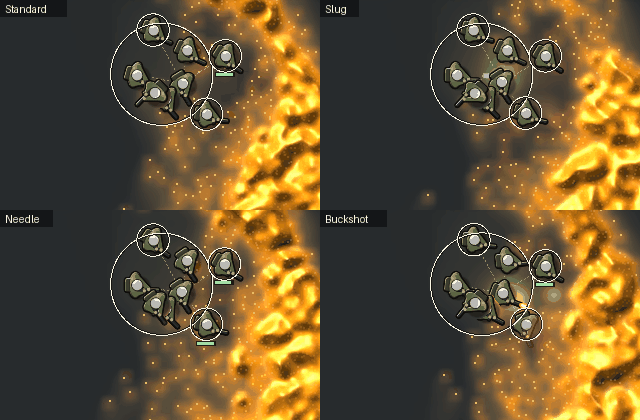
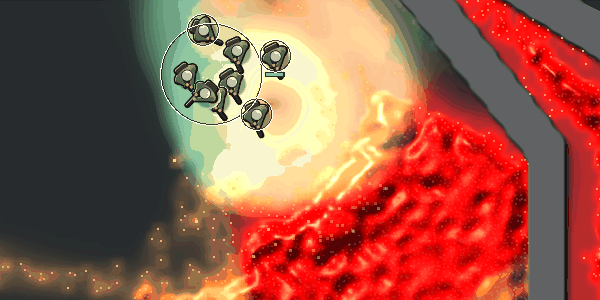

<title>Rolled Bullets</title>
<meta name="claude:viewport-fit-sides" content="cover">
<link rel="stylesheet" href="https://fonts.googleapis.com/css2?family=Space+Grotesk:wght@500;700&family=Inter:wght@400;600&display=swap">
<style>
/* Layout: one column; what a bullet is, the sets table, the cost table, then the films with counts beside each. */
:root { --bg:#f2f3ef; --fg:#1c2023; --muted:#5b6366; --panel:#ffffff; --line:#d7d9d1; --accent:#5d7f3a;
  --display:"Space Grotesk",system-ui,sans-serif; --body:"Inter",system-ui,sans-serif; }
@media (prefers-color-scheme: dark) { :root:not([data-theme="light"]) { --bg:#121516; --fg:#e6e9e5; --muted:#99a2a2; --panel:#1a1e20; --line:#2b3134; --accent:#a3c97a; color-scheme:dark } }
:root[data-theme="dark"] { --bg:#121516; --fg:#e6e9e5; --muted:#99a2a2; --panel:#1a1e20; --line:#2b3134; --accent:#a3c97a; color-scheme:dark }
body { background:var(--bg); color:var(--fg); font-family:var(--body); line-height:1.55; }
main { max-width:860px; margin:0 auto; padding-block:32px 48px; padding-left:max(16px, env(safe-area-inset-left, 0px)); padding-right:max(16px, env(safe-area-inset-right, 0px)); display:grid; gap:28px; }
h1, h2 { font-family:var(--display); text-wrap:balance; margin:0; }
h1 { font-size:2rem; } h2 { font-size:1.25rem; }
p { margin:0; max-width:65ch; }
.muted { color:var(--muted); }
section { display:grid; gap:12px; min-width:0; }
figure { margin:0; background:var(--panel); border:1px solid var(--line); border-radius:6px; overflow:hidden; }
figure img { display:block; width:100%; }
figcaption { padding:12px 14px; display:flex; flex-wrap:wrap; gap:6px 14px; align-items:baseline; }
.tag { font-family:var(--display); font-weight:700; color:var(--accent); }
.counts { font-variant-numeric:tabular-nums; color:var(--muted); }
.wrap { overflow-x:auto; }
table { border-collapse:collapse; font-variant-numeric:tabular-nums; width:100%; }
th, td { text-align:left; padding:6px 10px; border-bottom:1px solid var(--line); vertical-align:top; }
th { font-weight:600; }
td.num, th.num { text-align:right; }
.pair { display:grid; grid-template-columns:repeat(auto-fit, minmax(300px, 1fr)); gap:12px; }
</style>
<main>
  <header style="display:grid;gap:8px">
    <h1>Rolled Bullets</h1>
    <p class="muted">Larder World, 14 November. Each bullet is now its own card: a payload (plain, blast, bomb, gas or germ), a set, a rolled damage and speed, range and spread multipliers from 0.25x to 4x, and a cost from how good the roll is plus a little luck. The cost comes out of the gun's budget when you build the gun. Firing is free.</p>
  </header>

  <section>
    <h2>What a bullet is</h2>
    <p>Damage is the size of the hole: a plain bullet's strike and a payload's burst grow with it, so double the damage clears double the area. Speed, range and spread multiply the gun's own numbers. Each number is its own draw from a normal curve, so most bullets land near their set's lean, some are much better or worse, and a few are far out. Deeper planets roll more damage, 4% a planet. Today's blast, bomb, gas and germ cards are the standard bullets, every number at 1x.</p>
    <div class="wrap"><table>
      <thead><tr><th>Set</th><th class="num">Damage</th><th class="num">Speed</th><th class="num">Range</th><th class="num">Spread</th><th>Reads as</th></tr></thead>
      <tbody>
        <tr><td>Standard</td><td class="num">1x</td><td class="num">1x</td><td class="num">1x</td><td class="num">1x</td><td>the plain gun's numbers</td></tr>
        <tr><td>Slug</td><td class="num">1.6x</td><td class="num">0.6x</td><td class="num">0.9x</td><td class="num">0.6x</td><td>heavy, slow, tight</td></tr>
        <tr><td>Needle</td><td class="num">0.6x</td><td class="num">2x</td><td class="num">1.5x</td><td class="num">0.5x</td><td>light, fast, far, tight</td></tr>
        <tr><td>Buckshot</td><td class="num">0.8x</td><td class="num">0.9x</td><td class="num">0.6x</td><td class="num">2.5x</td><td>short and wide</td></tr>
      </tbody>
    </table></div>
  </section>

  <section>
    <h2>What a bullet costs</h2>
    <p>The cost is the payload's base cost times how good the roll is, times a small luck draw of its own, rounded. It counts against the gun's budget like any card (a standard rifle has 10). Over 20,000 rolls:</p>
    <div class="wrap"><table>
      <thead><tr><th>Payload</th><th class="num">Planet 1: median</th><th class="num">10th to 90th</th><th class="num">Planet 8: median</th><th class="num">10th to 90th</th></tr></thead>
      <tbody>
        <tr><td>Plain</td><td class="num">1</td><td class="num">1 to 2</td><td class="num">1</td><td class="num">1 to 2</td></tr>
        <tr><td>Blast</td><td class="num">3</td><td class="num">1 to 5</td><td class="num">4</td><td class="num">2 to 5</td></tr>
        <tr><td>Gas</td><td class="num">3</td><td class="num">2 to 5</td><td class="num">4</td><td class="num">2 to 5</td></tr>
        <tr><td>Bomb</td><td class="num">4</td><td class="num">2 to 6</td><td class="num">5</td><td class="num">2 to 7</td></tr>
        <tr><td>Germ</td><td class="num">4</td><td class="num">2 to 6</td><td class="num">5</td><td class="num">2 to 7</td></tr>
      </tbody>
    </table></div>
    <p class="muted">Costs are whole numbers on the budget's scale, so plain bullets only cost 1 or 2. A finer budget scale would let them differ more.</p>
  </section>

  <section>
    <h2>In the loadout strip</h2>
    <figure><figcaption><span class="tag">Rolled load</span><span class="counts">Needle blast, buckshot bomb, buckshot germ, buckshot blast. Each card shows its payload's icon with its set's badge in the corner, and the tooltip lists its numbers. Ctrl+H rolls a new load to try.</span></figcaption></figure>
  </section>

  <section>
    <h2>Payload bullets: standard against rolled sets</h2>
    <p>Eight rifles on the Fork map, seed 1, holding the front from 0:19 to 0:22. Both films fire gas, then blast, in turn. On the right the gas is a needle round and the blast a slug round: slug blasts ring about a quarter wider, and needle gas clouds are about a quarter narrower.</p>
    <div class="pair">
      <figure><figcaption><span class="tag">Standard gas, standard blast</span><span class="counts">2,888 killed · 113 shots</span></figcaption></figure>
      <figure><figcaption><span class="tag">Needle gas, slug blast</span><span class="counts">2,543 killed · 107 shots</span></figcaption></figure>
    </div>
  </section>

  <section>
    <h2>Plain bullets, one set each</h2>
    <figure><figcaption><span class="tag">Same scene, four sets</span><span class="counts">Standard 655 killed · Slug 957 · Needle 434 · Buckshot 541 (about 150 shots each)</span></figcaption></figure>
    <p class="muted">At this close front most bullets hit within a cell or two, so the four are hard to tell apart on screen. Damage decides most of the result: a slug kills half again a standard bullet's count. Speed and range should matter on a longer field, which these films do not test.</p>
  </section>

  <section>
    <h2>A rolled load</h2>
    <div class="pair">
      <figure><figcaption><span class="tag">Rifle</span><span class="counts">needle blast, buckshot bomb, buckshot germ, buckshot blast · 1,278 killed · 152 shots</span></figcaption></figure>
      <figure><figcaption><span class="tag">Scattergun</span><span class="counts">the first three fit its budget · 977 killed · 344 bullets</span></figcaption></figure>
    </div>
  </section>

  <p class="muted">Counts come from one seed, so read them as a tuning note. The same scene on the old gas, quiet and blast round kills exactly what it did before, so standard cards play unchanged. Rendered on the cloud's software GPU.</p>
</main>
